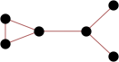
(JD)

(JD)
(JD)
(JD)

(JD)
1. Given a graph, we can count how many ways there are to eliminate 1 vertex at a time (along with any incident edges) and keep the graph connected. For a given integer n, is there a graph that can be eliminated in exactly n ways, and if so, what is the smallest such graph?
2. If instead we eliminate edges one at a time, so as to not disconnect the graph (except for isolated vertices), what are the smallest graphs that can be eliminated in exactly n ways?
3. A Hamiltonian path is a path that visits all the vertices of a graph exactly once. For a given integer n, what is the smallest graph with exactly n Hamiltonian paths? We count a path and its reverse as the same path.
4. A Hamiltonian cycle is a cycle that visits all the vertices of a graph exactly once. For a given integer n, what is the smallest graph with exactly n Hamiltonian cycles? We count a cycle and all of its rotations and reflections as the same cycle.
Andrew Bayly found the vertex elimination number of complete graphs (v!), cycle graphs (v × 2v-2), star graphs (2 × (v-1)!), and path graphs (2v-1) with v vertices.
Andrew Bayly pointed out that all vertex elimination numbers are even, except 1. Joe DeVincentis pointed out that all graphs with 3 or more vertices that don't contain a triangle have vertex elimination numbers that are divisibly by 4.
Jon Palin used a computer program to search all connected graphs with 7 or fewer vertices. His results can be found here.
Here are the smallest graphs that can be vertex-eliminated in exactly n ways:
| 1 | 2 | 4 | 6 | 8 | 12 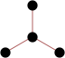 | 14 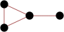 | 16 | 20 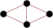 |
| 24 | 28 | 30 (JD) | 32 (AB) | 36 (JD) | 40 (JD) |
| 44 (JD) | 48 (JD) | 50 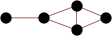 (JD) | 52 (JD) | 56 (JD) | 60 (JD) | 62 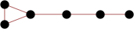 (JD) |
| 64 (AB) | 66 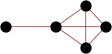 (JD) | 72 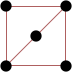 (JD) | 76 (JD) | 80 (JD) |
| 82 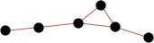 (JD) | 84 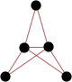 (JD) | 92 (JD) | 96 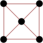 (JD) | 104 (JD) | 108 (JD) | 112 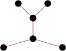 (JD) |
| 116 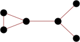 (JD) | 120 (JD) | 124 (JD) | 126 (JD) | 128 (JD) |
Jeremy Galvagni found the edge elimination number of path graphs (2v-2) with v vertices.
Joe DeVincentis found the edge elimination numbers of cycle graphs (v × 2v-2) and star graphs ((v-1)!) with v vertices.
Here are the smallest known graphs that can be edge-eliminated in exactly n ways:
| 1 | 2 | 4 | 6
| 8 | 14 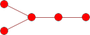 | 16 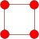 |
| 20 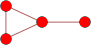 | 24 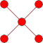 | 30 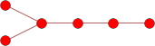 | 32 (JD) | 36 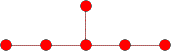 (JD) |
| 40 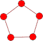 (JD) | 50 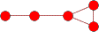 (JD) | 56 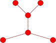 (JD) | 60 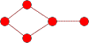 (JD) | 62 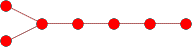 (JD) |
| 64 (JD) | 66 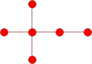 (JD) | 76 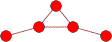 (JD) | 82 (JD) | 92 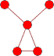 (JD) |
| 96 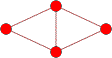 (JD) | 108 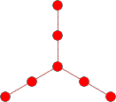 (JD) | 112 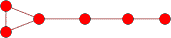 (JD) | 120 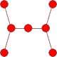 (JD) | 126 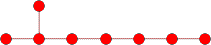 (JD) | 128 (JD) |
Jeremy Galvagni found the Hamiltonian path number of complete graphs (v!/2) and cycle graphs (v) with v vertices.
Mark Mammel found the smallest graphs for n≤27 by computer.
Here are the smallest graphs that have exactly n Hamiltonian paths:
| 0 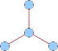 | 1 | 2 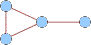 | 3 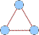 | 4 | 5 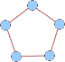 | 6 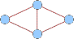 | 7 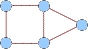 | 8 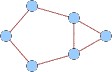 (JG) |
| 9 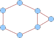 (JG) | 10 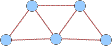 (JG) | 11 (JG) | 12 (JG) | 13 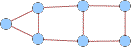 (MM) | 14 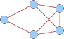 (MM) | 15 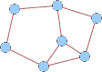 (MM) |
| 16 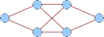 (MM) | 17 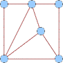 (MM) | 18 (MM) | 19 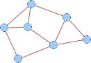 (MM) | 20 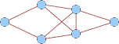 (MM) | 21 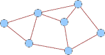 (MM) |
22 (MM) | 23 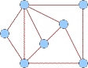 (MM) | 24 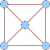 (MM) | 25 (MM) | 26 (MM) | 27 (MM) | 28 (JT) |
| 29 (JT) | 30 (JT) | 31 (JT) | 32 (JT) | 33 (JT) | 34 (JT) |
| 35 (JT) | 36 (JT) | 37 (JT) | 38 (JT) | 39 (JT) | 40 (JT) |
41 (JT) | 42 (JT) | 43 (JT) | 44 (JT) | 45 (JT) | 46 (JT) |
| 47 (JT) | 48 (JT) | 49 (JT) | 50 (JT) | 51 (JT) | 52 (JT) |
53 (JT) | 54 (JT) | 55 (JT) | 56 (JT) | 57 (JT) | 58 (JT) |
| 59 (JT) | 60 (JT) | 61 (JT) | 62 (JT) | 63 (JT) | 64 (JT) |
| 65 (JT) | 66 (JT) | 67 (JT) | 68 (JT) | 69 (JT) | 70 (JT) |
| 71 (JT) | 72 (JT) | 73 (JT) | 74 (JT) | 75 (JT) | 76 (JT) |
| 77 (JT) | 78 (JT) | 79 (JT) | 80 (JT) | 81 (JT) | 82 (JT) |
| 83 (JT) | 84 (JT) | 85 (JT) | 86 (JT) | 87 (JT) | 88 (JT) |
| 89 (JT) | 90 (JT) | 91 (JT) | 92 (JT) | 93 (JT) | 94 (JT) |
| 95 (JT) | 96 (JT) | 97 (JT) | 98 (JT) | 99 (JT) | 100 (JT) |
Jeremy Galvagni found the Hamiltonian cycle number of complete graphs ((v-1)!/2) with v vertices.
Andrew Bayly found that the wheel graph with v vertices has v-1 Hamiltonian cycles, so all positive integers are the Hamiltonian cycle number of some graph.
Mark Mammel found the smallest graphs for n≤25 by computer.
Jeremy Tan found the smallest graphs for 26≤n≤40 by computer. In 2014, he extended this to n≤88. He also computed that 7-vertex graphs can have these numbers of Hamiltonian cycles: 0-12, 14-20, 22-24, 26-28, 30, 32-34, 36, 38, 40, 45, 48, 52, 60, 62, 70, 72, 76, 80, 90, 108, 120, 144, 168, 240 and 360.
In 2018, Johan de Ruiter found that 8-vertex graphs can have these numbers of Hamilton cycles: 0-88, 90, 92-106, 108-116, 118, 120, 122-124, 126, 128-136, 138-140, 142, 144-150, 152-153, 156, 158, 160, 162, 164-166, 168-169, 172, 174, 176-177, 180, 183-184, 186, 188, 192, 194, 198, 200, 204, 208, 210, 212, 214, 216, 219-220, 222-223, 228, 230-232, 240, 245, 248, 252, 260, 264, 266, 268, 270, 276, 284, 292, 296, 298, 300, 308, 310, 312, 320, 323-324, 328, 336, 340, 348, 354, 360, 366, 384, 390, 408, 430, 432, 444, 456, 458, 476, 496, 504, 508, 576, 582, 636, 660, 696, 720, 744, 816, 912, 984, 1200, 1320, 1800, 2520. He also sent lists for n=9 and n=10.
Here are the smallest known graphs that have exactly n Hamiltonian cycles:
| 0 | 1 | 2 | 3 | 4 (AB) | 5 (MM) | 6 (MM) | 7 (MM) | 8 (MM) |
| 9 (MM) | 10 (MM) | 11 (MM) | 12 (MM) | 13 (MM) | 14 (MM) |
| 15 (MM) | 16 (MM) | 17 (MM) | 18 (MM) | 19 (MM) | 20 (MM) |
| 21 (MM) | 22 (MM) | 23 (MM) | 24 (MM) | 25 (MM) |
26 (JT) | 27 (JT) | 28 (JT) | 29 (JT) | 30 (JT) |
| 31 (JT) | 32 (JT) | 33 (JT) | 34 (JT) | 35 (JT) |
| 36 (JT) | 37 (JT) | 38 (JT) | 39 (JT) | 40 (JT) |
| 41 (JT) | 42 (JT) | 43 (JT) | 44 (JT) | 45 (JT) |
46 (JT) | 47 (JT) | 48 (JT) | 49 (JT) | 50 (JT) |
| 51 (JT) | 52 (JT) | 53 (JT) | 54 (JT) | 55 (JT) |
| 56 (JT) | 57 (JT) | 58 (JT) | 59 (JT) | 60 (JT) |
| 61 (JT) | 62 (JT) | 63 (JT) | 64 (JT) | 65 (JT) |
| 66 (JT) | 67 (JT) | 68 (JT) | 69 (JT) | 70 (JT) |
71 (JT) | 72 (JT) | 73 (JT) | 74 (JT) | 75 (JT) |
| 76 (JT) | 77 (JT) | 78 (JT) | 79 (JT) | 80 (JT) |
| 81 (JT) | 82 (JT) | 83 (JT) | 84 (JT) | 85 (JT) |
86 (JT) | 87 (JT) | 88 (JT) | 89 (JT) | 90 (JT) |
| 91 (JT) | 92 (JT) | 93 (JT) | 94 (JT) | 95 (JT) |
| 96 (JT) | 97 (JT) | 98 (JT) | 99 (JT) | 100 (JT) |
If you can extend any of these results, please e-mail me. Click here to go back to Math Magic. Last updated 1/5/19.